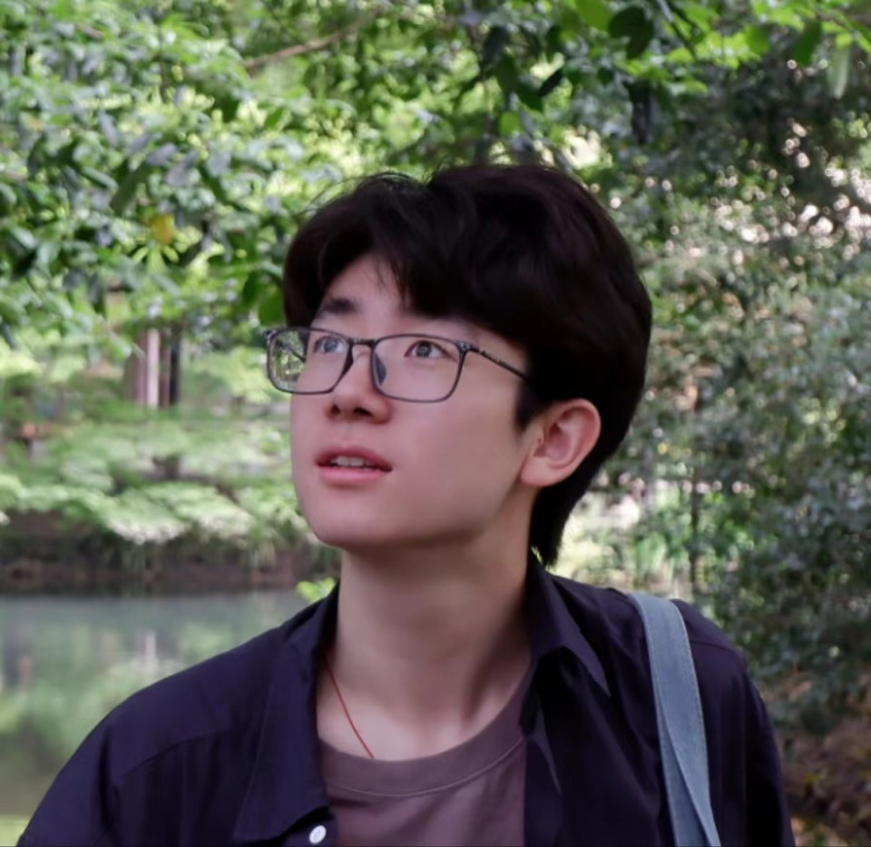

Continual Deraining
Compact prompt memories help a single model handle changing rain distributions while preserving earlier knowledge.
Peking University / Computer Vision / Derain
I am a Ph.D. student in the School of Computer Science at Peking University, advised by Prof. Jiaying Liu. My research studies image restoration and weather-robust vision, with a focus on making visual systems see clearly through rain and distribution shift. I also keep a small speedcraft notebook for dexterity games and mechanical puzzles, where fast hands meet careful algorithms.
Wangxuan Institute of Computer Technology, Peking University
B.S. in Computer Science, Turing Class, Peking University
Deraining, continual restoration, prompt learning, robust perception
Former national Butterfly Clicking/CPS record holder; national runner-up in Nine Linked Rings with a 3:04 solve.

Research
Compact prompt memories help a single model handle changing rain distributions while preserving earlier knowledge.
Spatial-temporal distillation transfers stronger video reasoning into lighter deraining models.
Unrolled optimization and prompt-driven adaptation provide a bridge between classical priors and modern restoration networks.
Domain adaptation improves segmentation and recognition when weather corrupts the visual signal.
Selected Publications
IEEE Transactions on Image Processing, vol. 35, pp. 5266-5280, 2026.
A unified restoration framework that combines unrolled optimization with prompt-driven adaptation.
A compact prompt-learning scheme for continual single-image deraining under changing data distributions.
A teacher-student framework that distills spatial and temporal structure for efficient video rain removal.
A weather-aware domain adaptation study for image segmentation in rainy visual conditions.
Honors
Beyond Papers
Before and alongside research, I have spent a lot of time mentoring students in mathematics and informatics. I enjoy turning difficult ideas into clean visual explanations, small tools, and systems that are easier to reason about.
I also keep notes on niche skill games: fast clicking, ring puzzles, grid logic, route planning, and other tiny arenas where hand speed and algorithmic thinking become the same habit.
Read the speedcraft notes